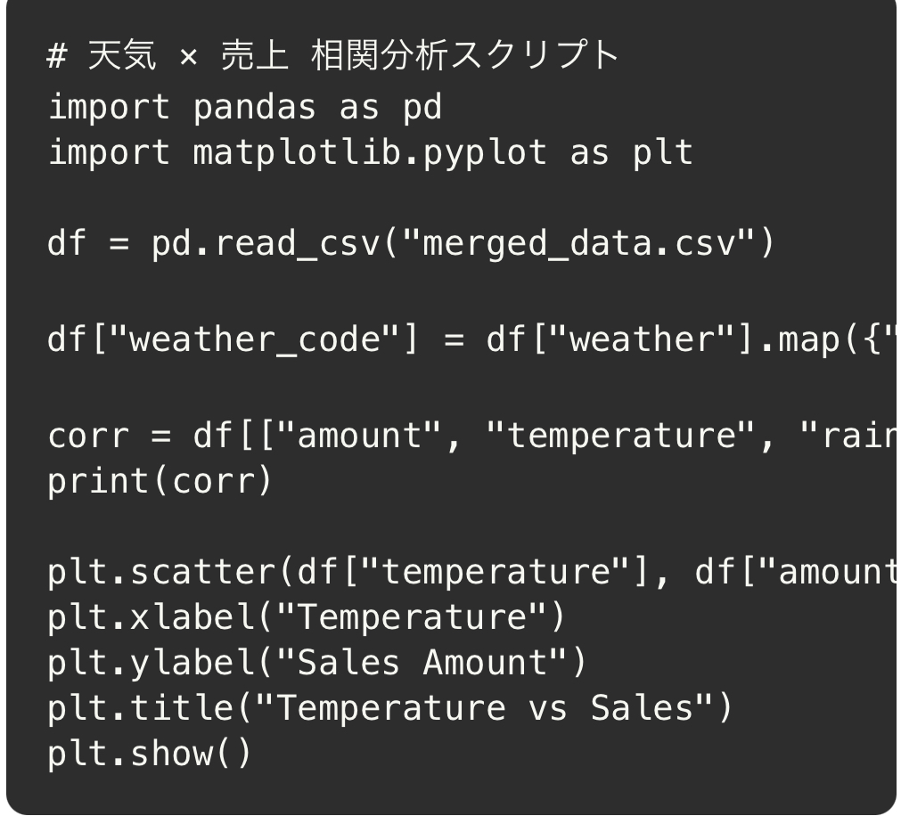
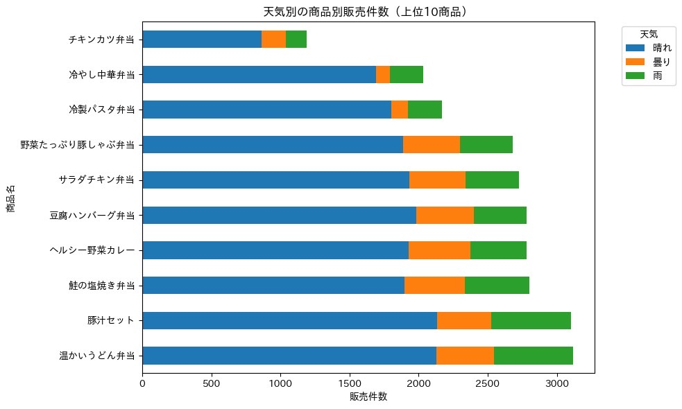

POSデータ × 商品データ × 天気データ の統合分析
POSデータ・商品データ・天気データを結合し、 「気温」「降水量」「天気区分」が 売上にどれほど影響するかを分析しました。
以下は VS Code で実行した Python コード。

下の図は、気温と売上の散布図の例です。（VS Code の Python 実行結果を貼り付け）

（例：気温が上がるほど売上も上昇傾向）
6班のデータ分析したpdfはこちらから
6班データ分析